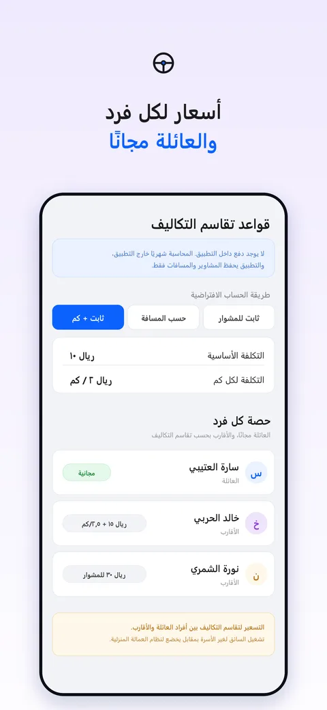
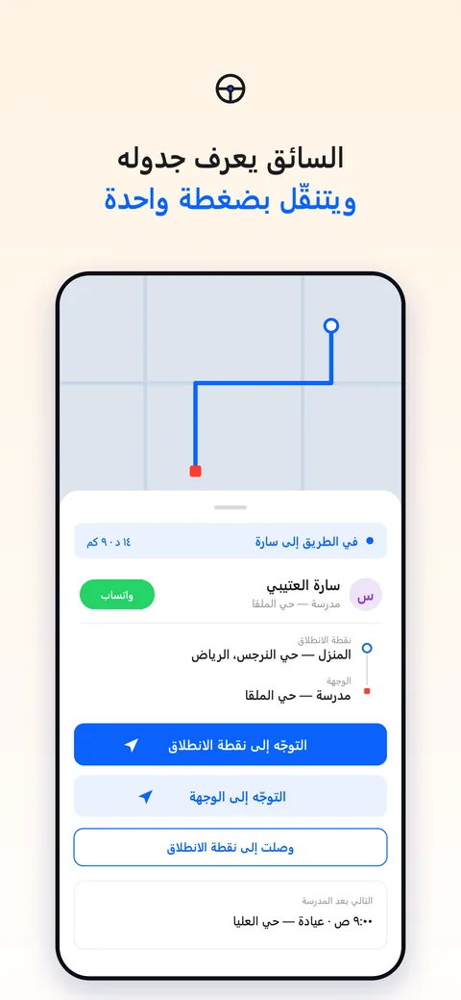
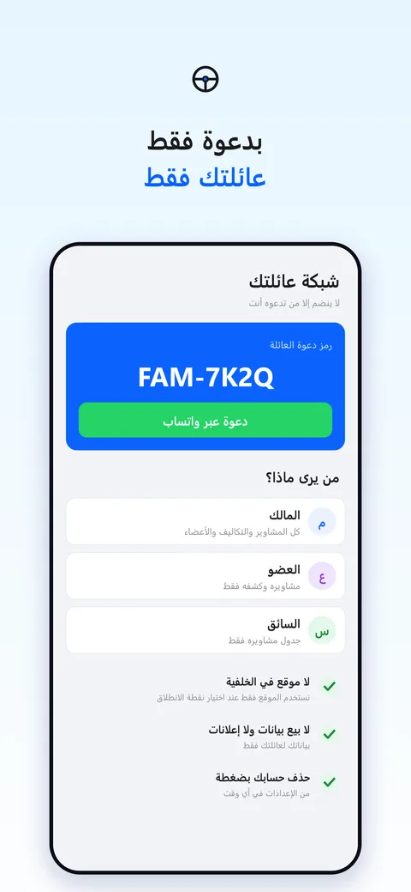

سواقي — كل مشاوير سائق العائلة في مكان واحد
اطلب، وافق، ويمشي السائق على الجدول — وتوصلك «وصل بسلامة». لسائقك أنت فقط: لا تتصل عليه كل ربع ساعة، ولا تحسب التكاليف على الجوال.
متاح على iPhone · أول ١٠٠ مشوار مجانًا · نسخة أندرويد قريبًاثلاث خطوات، وتنتهي المكالمات
سواقي ليس تطبيق طلب سيارات. هو أداة لتنظيم مشاوير سائقك الخاص داخل عائلتك.
أنشئ شبكة عائلتك
أضف سائقك، وادعُ أفراد العائلة بضغطة على واتساب. لا ينضم إلا من تدعوه أنت.
اطلب ووافق
العائلة تطلب المشوار، وأنت ترى التكلفة وتوافق. أو اطلب مشوارك بنفسك — أو فعّل الاعتماد التلقائي لمشاوير المدرسة.
السائق يمشي على الجدول
يرى جدول يومه، ويتنقّل بضغطة واحدة، وتصلك «وصل بسلامة» عند الوصول.
كل ما يحتاجه سائق العائلة
مصمم لبيوت فيها سائق خاص ومشاوير مدرسة وعيادة وزيارات.
وافق وأنت تعرف التكلفة
كل طلب يصلك بالمسافة والتكلفة: وافق، أو اقترح، أو ارفض.
المدرسة والعيادة بضغطة
قوالب جاهزة: مشوار المدرسة يتكرر أحد إلى خميس، وموعد العيادة بذهاب وانتظار وعودة.
كشف لكل فرد على واتساب
كشف تقاسم التكاليف الشهري لكل فرد من العائلة والأقارب، بدل الحساب بالجوال.
تذكير و«وصل بسلامة»
تذكير للسائق قبل كل مشوار بـ١٥ دقيقة، وإشعار لك حين يصل أبناؤك إلى وجهتهم.
السائق بلغته
بطاقة دخول يرسلها لك التطبيق بالعربية أو الإنجليزية أو الهندية أو البنغالية أو الأوردو.
شاهد التطبيق



مجاني للبداية
أول ١٠٠ مشوار مجانًا، والأعضاء لا يدفعون أبدًا. وبعد أول مشوار يُعتمد تحصل على تجربة برو ١٤ يومًا تشمل كشف تقاسم التكاليف الشهري وسجل عمل السائق. الاشتراك عبر App Store فقط.
أسئلة شائعة
هل سواقي تطبيق لطلب سيارة أو سائق؟
لا. سواقي لتنظيم مشاوير سائقك الخاص الذي توظفه أنت. لا يعرض سائقين ولا يربطك بغرباء.
هل يحتاج السائق إلى حساب؟
نعم، تنشئ له حسابًا من التطبيق ثم ترسل له بطاقة الدخول على واتساب بلغته.
هل يُتتبَّع موقعي أو موقع السائق؟
لا نتتبع أحدًا في الخلفية. الموقع يُستخدم فقط عند اختيار نقطة الانطلاق أو عرض الطريق وأنت تستخدم التطبيق.
كيف أحذف حسابي؟
من الإعدادات داخل التطبيق ← حذف الحساب. التفاصيل في صفحة الدعم.
Sawagi — your family driver, organised
Sawagi helps a household manage its own private driver: the family requests, you approve, the driver follows the schedule, and you get an “arrived safely” notification. One clear cost-sharing statement per person at month-end. Arabic-first, built for Saudi families. Not a ride-hailing app.
Download on the App Store